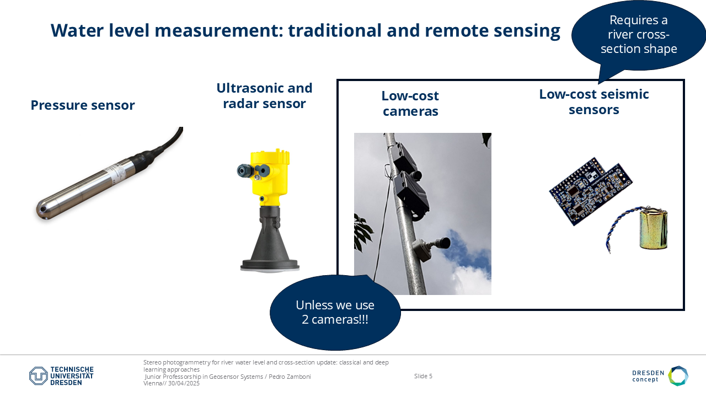
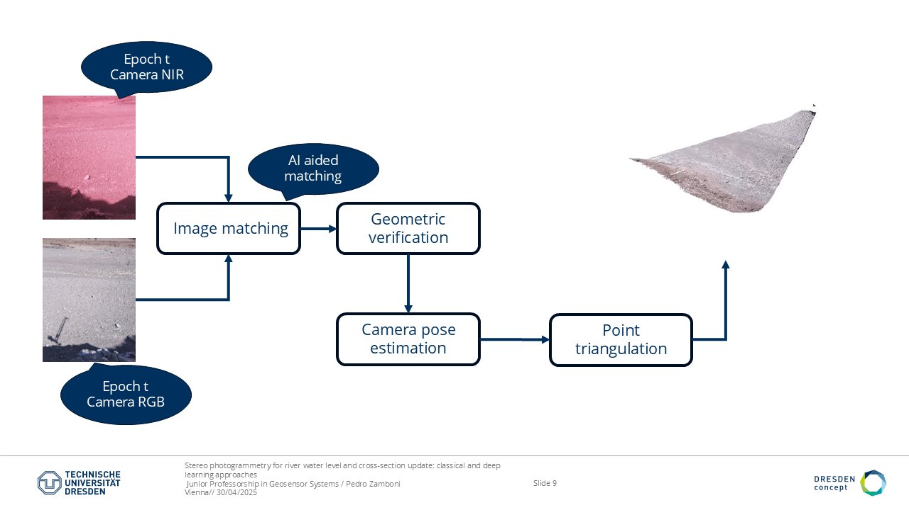
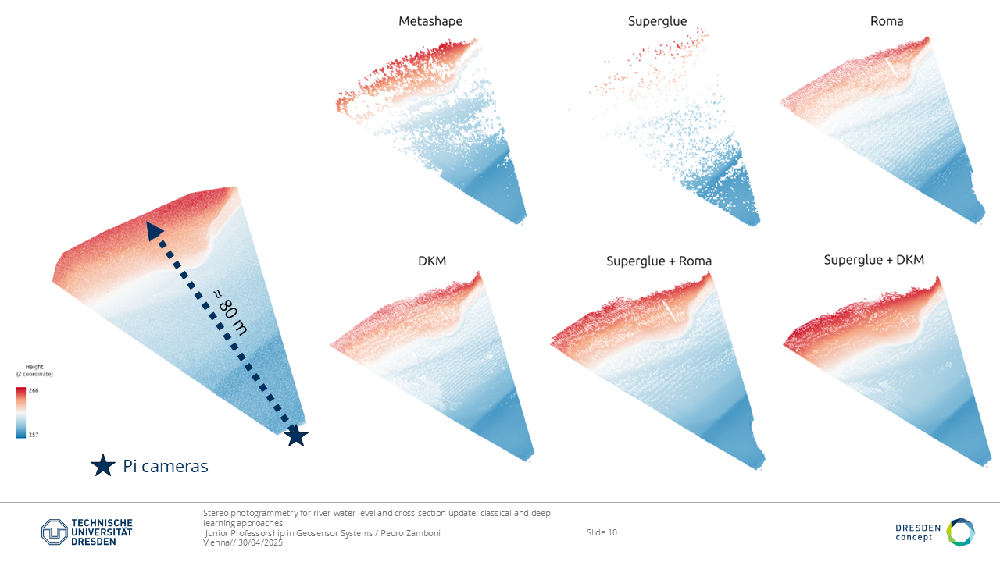
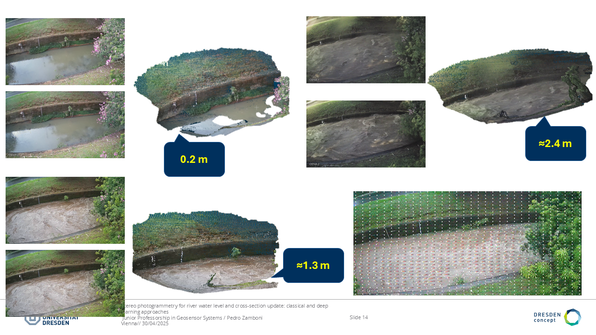

Classical pipeline
Key steps in stereo reconstruction using classical photogrammetry.
A stereo-camera workflow that removes the need for pre-existing 3D models and supports direct reconstruction of water levels and river cross-sections.
Traditional water level monitoring relies on intrusive gauging methods like pressure gauges, which can fail during intense floods. Camera gauges offer a remote and safer alternative, but single-camera setups often need 3D models and ground control points.
This research uses stereo photogrammetry with two cameras. The setup removes the need for a pre-existing 3D model and only requires the camera baseline and interior geometry. The method enables direct 3D reconstruction of river cross-sections and water levels.

Key steps in stereo reconstruction using classical photogrammetry.

Neural-network-assisted feature matching for more robust stereo processing.

Z-coordinate comparison between models and reference points.

Practical water level and discharge measurement workflow.